import numpy as np
import matplotlib.pylab as plt
np.random.seed(2022)Lab 5 · Multi-layer Perceptron & Backpropagation
Solving XOR with a two-layer network and recognizing 5×3 digit images, all in NumPy
Two-layer neural network with hand-derived backpropagation for XOR and digit classification.
NoteAbout this edition
English text and comments were edited for publication. Outputs are archived notebook results, not newly executed results. Lab scaffolds and reference illustrations were supplied by the course. Source and reproducibility notes.
TipSummary
A single logistic unit cannot separate XOR. This lab therefore builds a two-layer network by hand: the forward pass is first worked out for a single sample to check every tensor shape, then the backward pass is derived with the chain rule separately for the output layer and the hidden layer (local gradients \(\delta\)). Forward and backward passes are then iterated with gradient descent to solve XOR, and the same machinery with a softmax output and cross-entropy loss classifies ten 5×3 pixel digit images. The final test on slightly distorted digits shows the limitation that motivates convolutional networks in the next lab.
1. Multi-layer Networks and the Backpropagation Algorithm
1.1 Logical XOR
#################### Logical XOR ####################
X = np.array([[0, 0], [0, 1], [1, 0], [1, 1]])
Y = np.array([[0], [1], [1], [0]])
plt.plot(X[0::3, 0], X[0::3, 1], 'r.', markersize=20, label = "False")
plt.plot(X[1:3, 0], X[1:3, 1], 'b.', markersize=20, label = "True")
plt.xlim(-0.5, 1.5)
plt.ylim(-0.5, 1.5)
plt.grid()
plt.xlabel("x1")
plt.ylabel("x2")
plt.legend()
plt.show()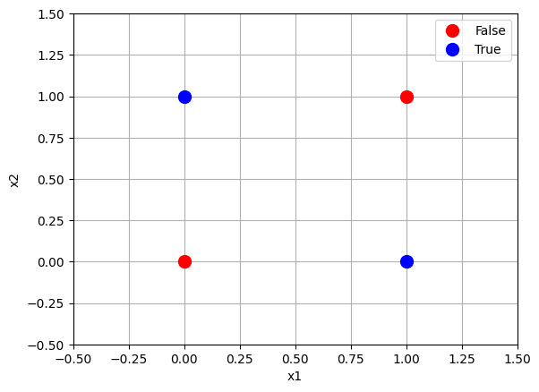
[Review] Classifier with a sigmoid activation

def sigmoid(z):
return 1 / (1 + np.exp(-z))def binary_classifier_logistic(x, theta):
z = x.dot(theta)
p_hat = sigmoid(z)
y_hat = (p_hat >= 0.5).astype(int)
return y_hatX_ = np.c_[np.ones(X.shape[0]), X]
print("X_ : ")
print(X_)
print("Y : ")
print(Y)X_ :
[[1. 0. 0.]
[1. 0. 1.]
[1. 1. 0.]
[1. 1. 1.]]
Y :
[[0]
[1]
[1]
[0]]eta = 0.1
n_iterations = 1000
(m, n) = X_.shape # m : num of data / n : dim of data
theta = np.random.randn(n,1)
J_hist = []
for iteration in range(n_iterations):
P_hat = sigmoid(X_.dot(theta))
gradients = 2/m * X_.T.dot(P_hat - Y)
theta = theta - eta * gradientsY_hat = binary_classifier_logistic(X_, theta)
print(sigmoid(X_.dot(theta).T))
print(Y_hat.T)
print(Y.T)[[0.50001367 0.5000022 0.50000209 0.49999062]]
[[1 1 1 0]]
[[0 1 1 0]]num_of_samples = 30
(m, n) = X_.shape # m : num of data / n : dim of data
x1_min = -0.2
x1_max = 1.2
x2_min = -0.2
x2_max = 1.2
x1 = np.linspace(x1_min, x1_max, num_of_samples)
x2 = np.linspace(x2_min, x2_max, num_of_samples)
X_new = np.ones((num_of_samples**2 , n))
for i in range(num_of_samples):
for j in range(num_of_samples):
X_new[i*num_of_samples + j, 0] = 1
X_new[i*num_of_samples + j, 1] = x1[i]
X_new[i*num_of_samples + j, 2] = x2[j]
Y_hat = binary_classifier_logistic(X_new, theta)
Y_hat = np.reshape(Y_hat, (num_of_samples**2))
plt.plot(X_new[Y_hat == 1][:, 1], X_new[Y_hat == 1][:, 2], 'g.', markersize = 4)
idx1 = np.where(X_new[Y_hat == 1][:, 1] == min(X_new[Y_hat == 1][:, 1]))[0][0]
idx2 = np.where(X_new[Y_hat == 1][:, 1] == max(X_new[Y_hat == 1][:, 1]))[0][0]
plt.plot([X_new[Y_hat == 1][:, 1][idx1], X_new[Y_hat == 1][:, 2][idx1]], [X_new[Y_hat == 1][:, 2][idx1], X_new[Y_hat == 1][:, 1][idx1]], 'r--')
plt.plot(X[0::3, 0], X[0::3, 1], 'r.', markersize=20, label = "False")
plt.plot(X[1:3, 0], X[1:3, 1], 'b.', markersize=20, label = "True")
plt.xlim(x1_min, x1_max)
plt.ylim(x2_min, x2_max)
plt.grid()
plt.xlabel("x1")
plt.ylabel("x2")
plt.legend()
plt.show()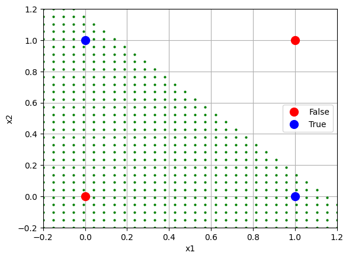
1.2 Two-layer Classifier
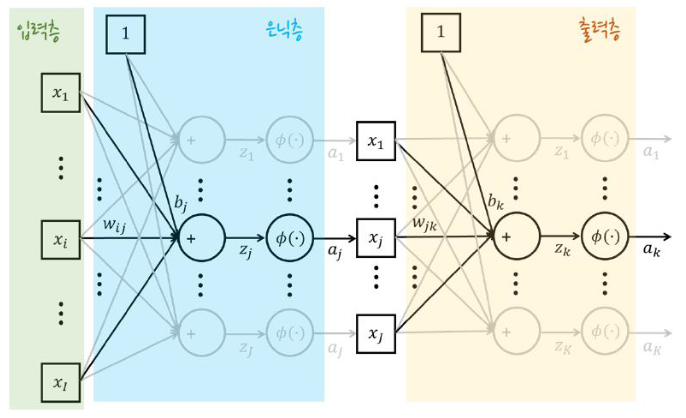
Q. What is the dimension of the XOR input data? 2
Q. What should the shape of the first hidden layer’s weights be (3 nodes)? (2, 3)
Q. How many biases does the first hidden layer have? One per hidden node
Q. What is the dimension of the hidden activation \(a\)? 3
To understand the computation, we first process a single sample.
X = np.array([[0, 0], [0, 1], [1, 0], [1, 1]])
Y = np.array([[0], [1], [1], [0]])X_1 = X[0, :]################## Fill Your Code! ##################
W1 = np.random.randn(2, 3);
b1 = np.random.randn(1, 3);
z1 = X_1.dot(W1) + b1
a1 = sigmoid(z1)
#####################################################
print(W1.shape)
print(b1.shape)
print(z1.shape)
print(a1.shape)(2, 3)
(1, 3)
(1, 3)
(1, 3)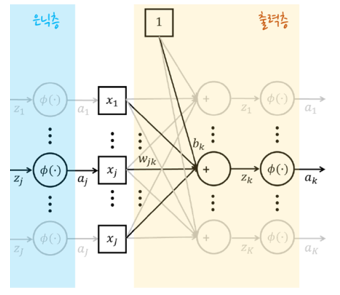
Q. What is the dimension of the input to the output layer? 3
Q. How many outputs should the output layer produce? 1 (one output node)
Q. What should the shape of the output layer’s weights be? (3, 1)
Q. How many biases does the output layer have? 1 (one per output node)
################## Fill Your Code! ##################
W2 = np.random.randn(3, 1);
b2 = np.random.randn(1, 1);
z2 = a1.dot(W2) + b2
a2 = sigmoid(z2)
#####################################################
print(W2.shape)
print(b2.shape)
print(z2.shape)
print(a2.shape)
# Final output
print(a2)(3, 1)
(1, 1)
(1, 1)
(1, 1)
[[0.70746348]]Having checked the computation for one sample, we now process the whole dataset.
Q. What is the shape of the output for the 4 samples? (4, 1)
################## Fill Your Code! ##################
# hint : W1 b1 W2 b2
z1 = X.dot(W1) + b1
a1 = sigmoid(z1)
z2 = a1.dot(W2) + b2
a2 = sigmoid(z2)
#####################################################
Y_hat = a2
print(Y_hat)[[0.70746348]
[0.67430534]
[0.7441834 ]
[0.69920277]]1.3 Backpropagation & the Gradient Descent Rule
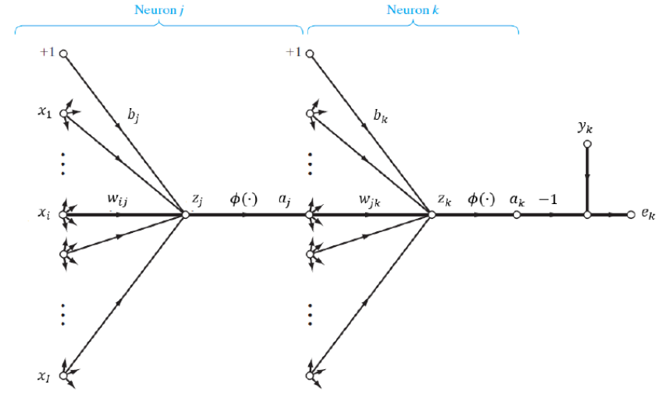
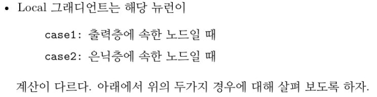
Case 1: a node in the output layer
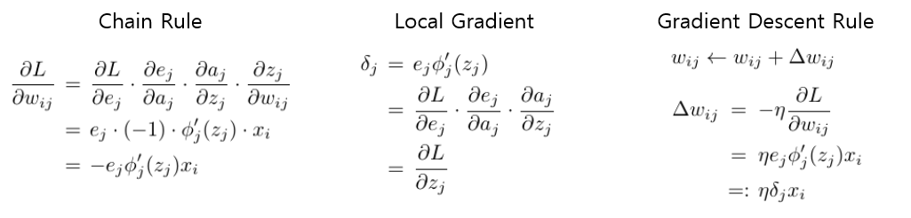
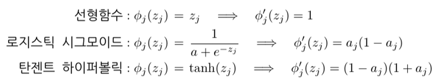
#####################################################
########### Backpropagation: output layer ##########
################## Fill Your Code! ##################
# hint : Y Y_hat
# dL/de : (4, 1)
dLde = Y - Y_hat
# de/da2 : (4, 1)
deda2 = -1*np.ones((4, 1))
# da2/dz2 : (4, 1)
da2dz2 = a2*(1-a2)
# dz2/dW2 : (4, 3)
dz2dW2 = a1
# dz2/db2 : (4, 1)
dz2db2 = np.ones((4, 1))
# local gradient : (4, 1)
delta2 = dLde*deda2*da2dz2
delta2 = -1*delta2
# dL/dW2 : (3, 1)
dLdW2 = dz2dW2.T.dot(delta2)
# dL/db2 : (1, 1)
dLdb2 = dz2db2.T.dot(delta2)
# Gradient Descent Rule
eta = 0.01
W2 = W2 + eta*dLdW2
b2 = b2 + eta*dLdb2
#####################################################Case 2: a node in a hidden layer
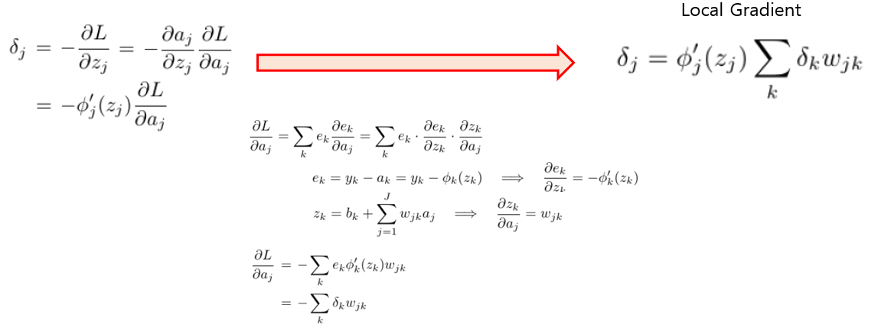
#####################################################
########### Backpropagation: hidden layer ##########
################## Fill Your Code! ##################
# da1/dz1 : (4, 3)
da1dz1 = a1*(1-a1)
# local gradient : (4, 3)
delta1 = da1dz1 * delta2.dot(W2.T)
# dz1/dW1 : (4, 2)
dz1dW1 = X
# dz1/db1 : (4, 1)
dz1db1 = np.ones((4, 1))
# dL/dW1 : (2, 3)
dLdW1 = dz1dW1.T.dot(delta1)
# dL/db1 : (1, 3)
dLdb1 = dz1db1.T.dot(delta1)
# Gradient Descent Rule
eta = 0.01
W1 = W1 + eta*dLdW1
b1 = b1 + eta*dLdb1
#####################################################As in the code above, backpropagation first needs a forward pass to obtain \(\hat{y}\) and the error.
Let us now run the forward and backward passes iteratively.
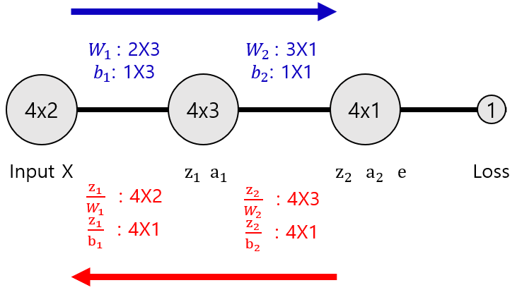
np.random.seed(2022)
W1 = np.random.randn(2, 3);
b1 = np.random.randn(1, 3);
W2 = np.random.randn(3, 1);
b2 = np.random.randn(1, 1);
n_iterations = 10000
eta = 0.1
for iteration in range(n_iterations):
##################################################
# Forward pass, loss, and backward pass #
##################################################
# Forward
z1 = X.dot(W1) + b1
a1 = sigmoid(z1)
z2 = a1.dot(W2) + b2
a2 = sigmoid(z2)
Y_hat = a2
# MSE
e = Y - Y_hat
loss = 1/4*(e**2).sum()
# Backward
dLde = e
deda2 = -1*np.ones((4, 1))
da2dz2 = a2*(1-a2)
dz2dW2 = a1
dz2db2 = np.ones((4, 1))
delta2 = dLde*deda2*da2dz2
delta2 = -1*delta2
dLdW2 = dz2dW2.T.dot(delta2)
dLdb2 = dz2db2.T.dot(delta2)
da1dz1 = a1*(1-a1)
delta1 = da1dz1 * delta2.dot(W2.T)
dz1dW1 = X
dz1db1 = np.ones((4, 1))
dLdW1 = dz1dW1.T.dot(delta1)
dLdb1 = dz1db1.T.dot(delta1)
# Gradient Descent Rule
W2 = W2 + eta*dLdW2
b2 = b2 + eta*dLdb2
W1 = W1 + eta*dLdW1
b1 = b1 + eta*dLdb1
##################################################
# End of my code #
##################################################
print("After Learning")
print("Y_hat")
print(Y_hat)
print("loss")
print(loss)After Learning
Y_hat
[[0.02728225]
[0.95020931]
[0.95949416]
[0.05827573]]
loss
0.002065054644362411# Result
print((Y_hat >= 0.5).astype(int).T[0])[0 1 1 0]Visualization of the learned decision regions (red dots mark the region predicted as False).
def forward(X, W1, b1, W2, b2):
z1 = X.dot(W1) + b1
a1 = sigmoid(z1)
z2 = a1.dot(W2) + b2
a2 = sigmoid(z2)
Y_hat = a2
return Y_hat
num_of_samples = 30
(m, n) = X.shape # m : num of data / n : dim of data
x1_min = -0.2
x1_max = 1.2
x2_min = -0.2
x2_max = 1.2
x1 = np.linspace(x1_min, x1_max, num_of_samples)
x2 = np.linspace(x2_min, x2_max, num_of_samples)
X_new = np.ones((num_of_samples**2 , n))
for i in range(num_of_samples):
for j in range(num_of_samples):
X_new[i*num_of_samples + j, 0] = x1[i]
X_new[i*num_of_samples + j, 1] = x2[j]
Y_hat = forward(X_new, W1, b1, W2, b2)
Y_hat = np.reshape((Y_hat >= 0.5).astype(int).T[0], (num_of_samples**2))
plt.plot(X_new[Y_hat == 0][:, 0], X_new[Y_hat == 0][:, 1], 'r.', markersize = 4)
plt.plot(X[0::3, 0], X[0::3, 1], 'r.', markersize=20, label = "False")
plt.plot(X[1:3, 0], X[1:3, 1], 'b.', markersize=20, label = "True")
plt.xlim(x1_min, x1_max)
plt.ylim(x2_min, x2_max)
plt.grid()
plt.xlabel("x1")
plt.ylabel("x2")
plt.legend()
plt.show()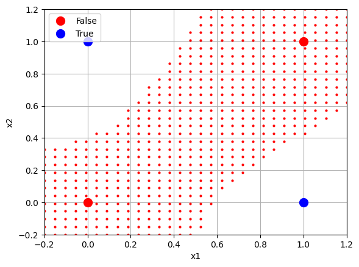
2. Digit Classification with a Multi-layer Network
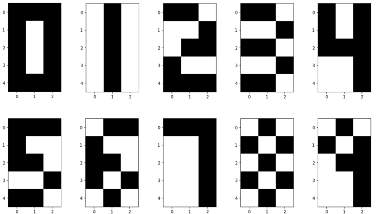
D0 = np.array([[1, 1, 1],
[1, 0, 1],
[1, 0, 1],
[1, 0, 1],
[1, 1, 1]])
D1 = np.array([[0, 1, 0],
[0, 1, 0],
[0, 1, 0],
[0, 1, 0],
[0, 1, 0]])
D2 = np.array([[1, 1, 0],
[0, 0, 1],
[0, 1, 1],
[1, 0, 0],
[1, 1, 1]])
D3 = np.array([[1, 1, 0],
[0, 0, 1],
[1, 1, 0],
[0, 0, 1],
[1, 1, 0]])
D4 = np.array([[1, 0, 1],
[1, 0, 1],
[1, 1, 1],
[0, 0, 1],
[0, 0, 1]])
D5 = np.array([[1, 1, 1],
[1, 0, 0],
[1, 1, 0],
[0, 0, 1],
[1, 1, 0]])
D6 = np.array([[0, 1, 1],
[1, 0, 0],
[1, 1, 0],
[1, 0, 1],
[0, 1, 0]])
D7 = np.array([[1, 1, 1],
[0, 0, 1],
[0, 0, 1],
[0, 0, 1],
[0, 0, 1]])
D8 = np.array([[0, 1, 0],
[1, 0, 1],
[0, 1, 0],
[1, 0, 1],
[0, 1, 0]])
D9 = np.array([[0, 1, 0],
[1, 0, 1],
[0, 1, 1],
[0, 0, 1],
[0, 0, 1]])X = np.array([D0, D1, D2, D3, D4, D5, D6, D7, D8, D9])
for x in X:
# https://matplotlib.org/stable/api/pyplot_summary.html
plt.imshow(x, cmap='gray_r')
plt.show()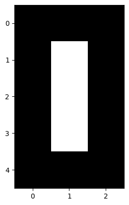
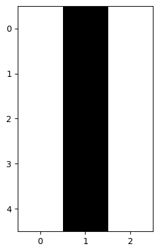
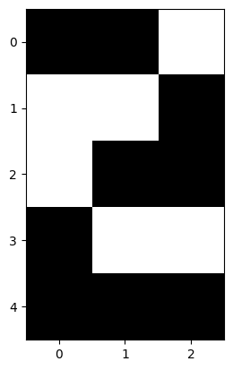
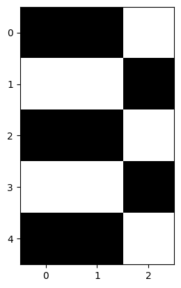
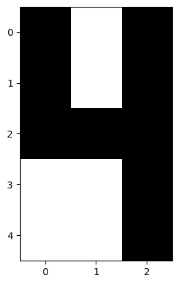
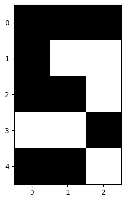
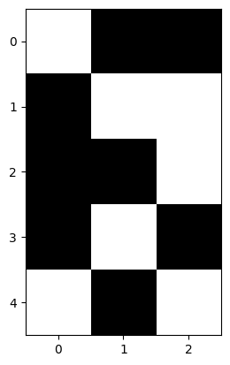
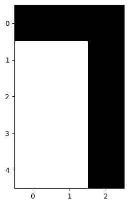
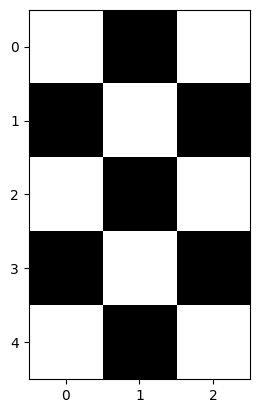
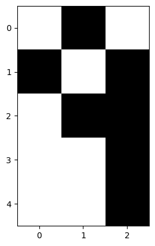
Y holds the class (label) of each image.
Q. How should the targets be represented for multi-class classification? One-hot encoding
Q. What is the shape of the encoded
y_? 1 × 10 per sample
# https://stackoverflow.com/questions/65643248/one-hot-encoding-from-numpy
def get_one_hot(targets, nb_classes):
res = np.eye(nb_classes)[np.array(targets).reshape(-1)]
return res.reshape(list(targets.shape)+[nb_classes])# Class label of each x
Y = np.array([[0], [1], [2], [3], [4], [5], [6], [7], [8], [9]])
Y_ = get_one_hot(Y.reshape(-1), Y.shape[0])Each input image has shape (5, 3).
To feed it into our multi-layer network it has to be flattened into a 1-D vector.
Q. What is the new shape of each input
x? 1 × 15
X_ = X.reshape(X.shape[0], -1).copy()
X_.shape(10, 15)Now let us train the network with the transformed X_ and Y_.
The table below lists the partial derivatives used in the chain rule, separately for the output layer and the hidden layer.
The red entries are the local gradients of each layer.
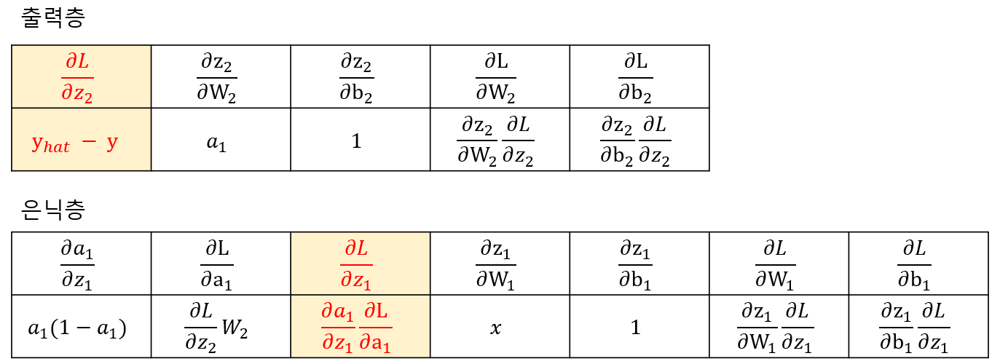
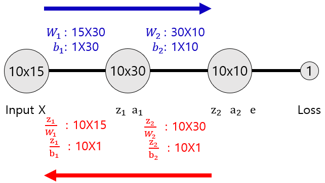
# https://scikit-learn.org/stable/modules/generated/sklearn.metrics.log_loss.html
from scipy.special import softmax
from sklearn.metrics import log_loss as cross_entropy_lossnp.random.seed(2022)
W1 = np.random.randn(15, 30);
b1 = np.random.randn(1, 30);
W2 = np.random.randn(30, 10);
b2 = np.random.randn(1, 10);
N = X_.shape[0]
eta = 0.01
n_iterations = 30000
for iteration in range(n_iterations):
##################################################
# Forward pass, loss, and backward pass #
##################################################
# Forward
z1 = X_.dot(W1) + b1
a1 = sigmoid(z1)
z2 = a1.dot(W2) + b2
a2 = softmax(z2, axis=1)
Y_hat = a2
# Cross Entrophy Loss
loss = cross_entropy_loss(Y_, Y_hat)
# Backward
delta2 = (Y_hat - Y_) / N # (10, 10)
delta2 = -1*delta2 # (10, 10)
dz2dW2 = a1 # (10, 30)
dz2db2 = np.ones((10, 1)) # (10, 1)
dLdW2 = dz2dW2.T.dot(delta2) # (30, 10) dot (10, 10) -> (30, 10)
dLdb2 = dz2db2.T.dot(delta2) # (1, 10) dot (10, 10) -> (1, 10)
da1dz1 = a1*(1-a1) # (10, 30)
delta1 = da1dz1 * delta2.dot(W2.T) # (10, 30)
dz1dW1 = X_ # (10, 15)
dz1db1 = np.ones((10, 1)) # (10, 1)
dLdW1 = dz1dW1.T.dot(delta1) # (15, 30)
dLdb1 = dz1db1.T.dot(delta1) # (1, 30)
# Gradient Descent Rule
W2 = W2 + eta*dLdW2
b2 = b2 + eta*dLdb2
W1 = W1 + eta*dLdW1
b1 = b1 + eta*dLdb1
##################################################
# End of my code #
##################################################
print("After Learning")
print("Y_hat")
print(np.around(Y_hat, 1))
print("loss")
print(loss)After Learning
Y_hat
[[1. 0. 0. 0. 0. 0. 0. 0. 0. 0.]
[0. 1. 0. 0. 0. 0. 0. 0. 0. 0.]
[0. 0. 1. 0. 0. 0. 0. 0. 0. 0.]
[0. 0. 0. 1. 0. 0. 0. 0. 0. 0.]
[0. 0. 0. 0. 1. 0. 0. 0. 0. 0.]
[0. 0. 0. 0. 0. 1. 0. 0. 0. 0.]
[0. 0. 0. 0. 0. 0. 1. 0. 0. 0.]
[0. 0. 0. 0. 0. 0. 0. 1. 0. 0.]
[0. 0. 0. 0. 0. 0. 0. 0. 1. 0.]
[0. 0. 0. 0. 0. 0. 0. 0. 0. 1.]]
loss
0.014923491347099702Y_hat.argmax(axis=1)array([0, 1, 2, 3, 4, 5, 6, 7, 8, 9])The digit images are classified correctly.
Now let us try the test images below, which are slightly altered versions of the digits.
T1 = np.array([[0, 0, 0],
[1, 0, 0],
[1, 0, 0],
[1, 0, 0],
[1, 0, 0]])
T2 = np.array([[1, 1, 0],
[0, 1, 1],
[0, 0, 0],
[0, 0, 0],
[0, 0, 0]])
T3 = np.array([[1, 1, 1],
[1, 0, 1],
[1, 1, 1],
[0, 0, 0],
[0, 0, 0]])
T = np.array([T1, T2, T3])
T_ = T.reshape(T.shape[0], -1).copy()
for t in T:
plt.imshow(t, cmap='gray_r')
plt.show()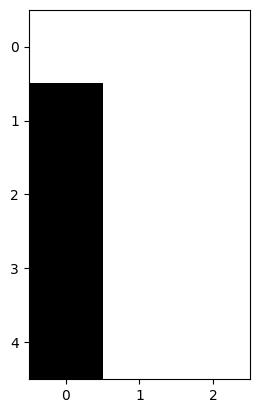
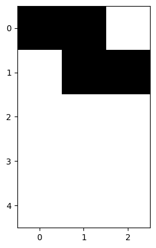
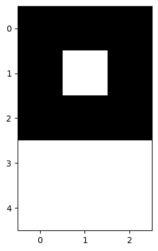
# forward
################## Fill Your Code! ##################
z1 = T_.dot(W1) + b1
a1 = sigmoid(z1)
z2 = a1.dot(W2) + b2
a2 = sigmoid(z2)
Y_hat = a2
#####################################################Y_hat.argmax(axis=1)array([0, 3, 3])The network fails on these slightly distorted digits: it has memorized exact pixel patterns rather than shapes.
In the next session we look at the Convolutional Neural Network (CNN), which was designed to address this problem.